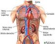

Aparato circulatorio o Sistema circulatorio
Regresar
El aparato circulatorio o sistema circulatorioa es la estructura anatómica compuesta por el sistema cardiovascular que conduce y hace circular la sangre, y por el sistema linfático que conduce la linfa unidireccionalmente hacia el corazón. En el ser humano, el sistema cardiovascular está formado por el corazón, los vasos sanguíneos (arterias, venas y capilares) y la sangre, y el sistema linfático que está compuesto por los vasos linfáticos, los ganglios, los órganos linfáticos (el bazo y el timo), la médula ósea , los tejidos linfáticos (como la amígdala y las placas de Peyer) y la linfa.
La sangre es un tipo de tejido conjuntivo fluido especializado, con una matriz coloidal líquida, una constitución compleja y de un color rojo característico. Tiene una fase sólida (elementos formes), que incluye a los leucocitos (o glóbulos blancos), los eritrocitos (o glóbulos rojos) , las plaquetas y una fase líquida, representada por el plasma sanguíneo.
La linfa es un líquido transparente que recorre los vasos linfáticos y generalmente carece de pigmentos. Se produce tras el exceso de líquido que sale de los capilares sanguíneos al espacio intersticial o intercelular, y es recogida por los capilares linfáticos, que drenan a vasos linfáticos más gruesos hasta converger en conductos que se vacían en las venas subclavias.
La función principal del aparato circulatorio es la de pasar nutrientes (tales como aminoácidos, electrolitos y linfa), gases, hormonas, células sanguíneas, entre otros, a las células del cuerpo, recoger los desechos metabólicos que se han de eliminar después por los riñones, en la orina, y por el aire exhalado en los pulmones, rico en dióxido de carbono (CO2). Además, defiende el cuerpo de infecciones y ayuda a estabilizar la temperatura y el pH para poder mantener la homeostasis.